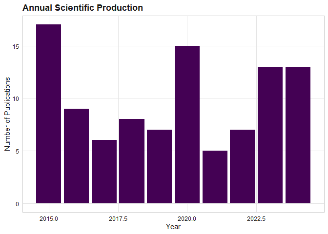

The reproducible, equity-aware, question-driven, AI-assisted bibliometric toolkit for working biomedical researchers.
scimapR is a comprehensive R package for bibliometric and scientometric analysis. It provides unified ingestion from 12+ bibliographic sources, classical and modern science-mapping analytics, embedding-based research cluster discovery, and a publication-ready Shiny application – all in one CRAN-compatible package with tibble-based outputs and viridis-themed visualisations.
What makes scimapR distinctive
-
Live corpus refresh. Your corpus knows when it was last refreshed, what is stale, and how to update itself (
sm_refresh(),sm_staleness(),sm_lock()). -
Research questions as first-class objects. Build structured PICO/PECO questions, auto-generate search queries, and screen with optional LLM grounding (
sm_question(),sm_screen_against_question()). -
Reproducible-by-construction corpus certificates. A YAML document that another researcher can use to re-derive your exact corpus (
sm_certificate(),sm_rebuild_from_cert()). -
Author trajectory analysis. Track topic pivots, collaborator turnover, and productivity curves across a career (
sm_author_trajectory()). -
Equity and representation auditing. Geographic, gender, funding, and OA audits with built-in confidence reporting and epistemic humility (
sm_audit_geographic(),sm_audit_gender()). -
LLM-grounded corpus chat. Ask questions about your corpus with every claim anchored to actual works – no hallucinated references (
sm_chat()).
Relationship to bibliometrix
scimapR is inspired by and designed as a complement to the excellent bibliometrix package by Massimo Aria and Corrado Cuccurullo (2017, Journal of Informetrics, doi:10.1016/j.joi.2017.08.007).
bibliometrix is the foundational R package for science mapping. It pioneered many of the analyses that scimapR also provides. scimapR is not a fork, not a derivative, and contains no code copied or adapted from bibliometrix. For shared bibliographic formats, scimapR ships clean-room parsers written from public format specifications.
First-class round-trip interop is provided:
M <- sm_to_bibliometrix(corpus) # use with bibliometrix
corpus <- as_sm_corpus(M) # come back to scimapRSee vignette("relationship-to-bibliometrix") for details.
Installation
# Install from GitHub (development version)
# install.packages("pak")
pak::pak("CTTIR/scimapR")Quick example
library(scimapR)
# Generate a synthetic corpus
corpus <- sm_example_corpus(n_works = 100, seed = 42)
print(corpus)
#>
#> ── <sm_corpus> ─────────────────────────────────────────────────────────────────
#> Works: 100 | Authors: 80 | Institutions: 0
#> Years: 2015 - 2024
#> Sources (journals): 10
#> Embeddings: 100 x 64
#> Provenance: synthetic (100)
#> Status: Unlocked (last refreshed: 2026-06-10 09:09:01)
# Visualise production
sm_plot_production(corpus)
Feature overview
| Module | Functions |
|---|---|
| File ingestion |
sm_read_bib(), sm_read_ris(), sm_read_wos(), sm_read_scopus(), sm_read_pubmed_xml(), … |
| API ingestion |
sm_fetch_openalex(), sm_fetch_crossref(), sm_fetch_pubmed(), sm_fetch_semantic_scholar(), … |
| Enrichment |
sm_enrich_unpaywall(), sm_enrich_altmetric(), sm_enrich_concepts(), … |
| Networks |
sm_network_citation(), sm_network_cocitation(), sm_network_coupling(), sm_network_collab(), sm_network_coword()
|
| Embeddings |
sm_embed_works(), sm_cluster_hdbscan(), sm_cluster_leiden(), sm_cluster_label()
|
| Indicators |
sm_metric_h_index(), sm_metric_disruption(), sm_metric_rcr(), sm_metric_fnci(), sm_metric_novelty()
|
| Visualisation |
sm_plot_landscape(), sm_plot_thematic_map(), sm_plot_production(), sm_plot_equity_dashboard(), … |
| Export |
sm_export_figure(), sm_export_table(), sm_export_zip(), sm_export_gephi()
|
| Shiny app | sm_run_app() |
Documentation
-
vignette("scimapR")– Getting started -
vignette("ingestion")– Building a corpus -
vignette("embeddings-and-clusters")– Semantic landscape -
vignette("modern-indicators")– CD/RCR/FNCI/novelty -
vignette("question-driven-reviews")– Research questions + screening -
vignette("reproducibility-and-certificates")– Corpus certificates -
vignette("equity-trajectory-and-chat")– Equity audit + trajectories -
vignette("relationship-to-bibliometrix")– Interop and credit
Acknowledgements
scimapR stands on the shoulders of the bibliometrix project. We are deeply grateful to Massimo Aria and Corrado Cuccurullo for creating the foundational R package for science mapping, and for their landmark 2017 paper which defined the field of R-based bibliometrics.
We also acknowledge the many data sources that make scimapR possible: OpenAlex, Crossref, PubMed, Semantic Scholar, Unpaywall, and others.
Citation
If you use scimapR in your research, please cite both scimapR and the foundational bibliometrix package:
citation("scimapR")BibTeX entries:
@Manual{scimapR,
title = {scimapR: Reproducible, Question-Driven, Embedding-Aware Science Mapping},
author = {Raban Heller},
year = {2026},
note = {R package version 0.1.0},
url = {https://github.com/CTTIR/scimapR},
}
@Article{bibliometrix,
title = {bibliometrix: An R-tool for comprehensive science mapping analysis},
author = {Massimo Aria and Corrado Cuccurullo},
journal = {Journal of Informetrics},
year = {2017},
volume = {11},
number = {4},
pages = {959--975},
doi = {10.1016/j.joi.2017.08.007},
}For a complete citation block including each data source used in your corpus, run sm_cite_corpus(your_corpus).
Use of LLM tools
Portions of this package were prepared with assistance from large language model tooling for narrowly defined, non-authorial tasks: copyediting, prose smoothing, Markdown/LaTeX formatting, scaffolding of boilerplate files (CI configs, build scripts), code refactoring. The tools used were Chat AI, the LLM service of KISSKI (GWDG), and a self-hosted Mistral Small (24B, Apache-2.0) run locally via Ollama and the ollamar R package — local inference only, with no data sent to third parties for the self-hosted model.
All scientific claims, methodological choices, analyses, interpretations, and conclusions are the author’s own. No LLM-generated text was incorporated without review and revision, and every reference was verified against its DOI, arXiv ID, or ISBN.
Contributing
Issues and pull requests are welcome at github.com/CTTIR/scimapR.